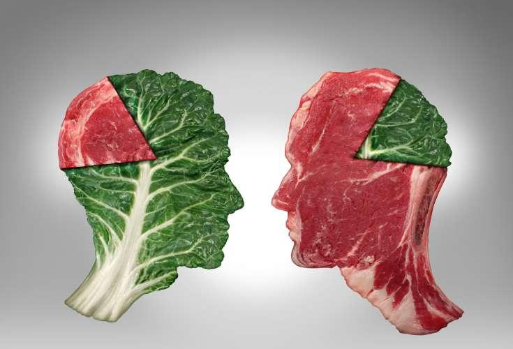
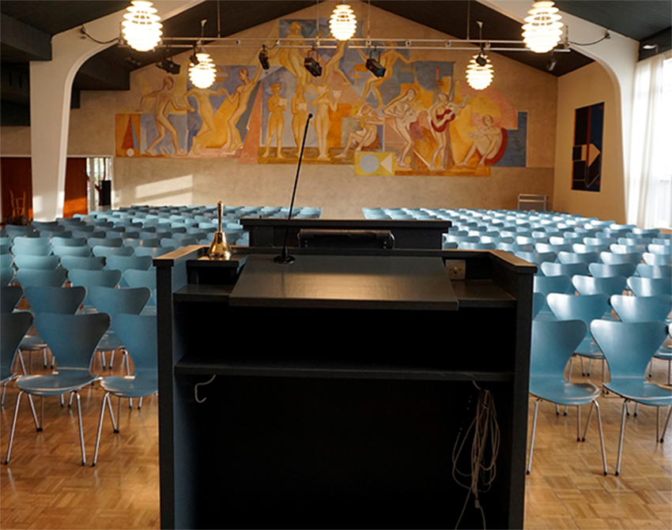

FP9 Dansk, skriftlig fremstilling
Du skal vælge en af disse opgaver:
1 Tik tak
2 Skal vi undvære kød?
3 E-sport
4 Elevtalen
Du skal skrive den valgte opgaves nummer og titel på din besvarelse.
1 Tik tak
2 Skal vi undvære kød?
3 E-sport
4 Elevtalen
Du skal skrive den valgte opgaves nummer og titel på din besvarelse.
Før du skriver
Til eleven
Til denne prøve i skriftlig fremstilling har du adgang til internettet.
Du må ikke kommunikere eller dele dine dokumenter med andre under prøven.
Nogle af opgaverne kræver, at du skal søge informationer på internettet til brug for din besvarelse. I andre opgaver er det en åben mulighed at søge fakta og inspiration.
Layoutet af din besvarelse indgår i vurderingen. Tænk derfor på, at du udover tekst kan inddrage fx billeder og andre grafiske virkemidler.
Hvis du i din besvarelse anvender informationer, citater, billeder eller andre grafiske virkemidler hentet fra internettet, skal du til sidst i besvarelsen angive de væsentlige kilder.
Din besvarelse vurderes på både indhold, sprog og form. Se vurderingskriterierne nedenfor.
God arbejdslyst!
Vurderingskriterier til eleven
Der gives én karakter baseret på en helhedsvurdering af 3 dimensioner: indhold, sprog og form
| Vurderingens 3 dimensioner | Vurderingskriterier | Forklaring |
| Tekstens indhold | Opgavens krav | I hvor høj grad opfylder din besvarelse de krav, der er stillet i opgaven? |
| Genre og fremstillingsform | I hvor høj grad viser din besvarelse sikkerhed i at skrive i opgavekravens fremstillingsformer og i at anvende eventuelle genrekarakteristika? | |
| Disponering | I hvor høj grad er din besvarelse hensigtsmæssigt disponeret, hvad angår indholdets sammenhæng og rækkefølge? | |
| Relevans | I hvor høj grad er din besvarelse relevant og dækkende i forhold til tekstens hensigt, målgruppe og situation? | |
| Anvendelse af internettet | Hvis du har anvendt internettet til at søge inspiration eller information, vurderes det, hvordan og i hvor høj grad du kritisk har bearbejdet, anvendt og gjort det søgte til dit eget i din besvarelse | |
| Kildeliste | Hvis du har anvendt internettet, vurderes det, i hvor høj grad de væsentligste kilder er angivet korrekt i besvarelsen. | |
| Tekstens sprog | Sprog | I hvor høj grad er sproget i din besvarelse forståeligt, klart og varieret og tilpasset tekstens hensigt både med hensyn til ordforråd og syntaks? |
| Korrektur | I hvor høj grad er der i din besvarelse anvendt korrekt stavning, og er din tegnsætning sikker? | |
| Tekstens form | Layout | I hvor høj grad fremmer dit layout kommunikationen i forhold til det medie og den genre, du skriver i? |
1 Tik tak
Tegning: Per Marquard Otzen/Politiken.dk
Vi kender det alle sammen, at tiden løber fra os. Nogle gange er tid en mangelvare, og andre gange føles tiden uendelig.
Du vil gerne i dialog med dine følgere om emnet tid og skriver derfor et indlæg på din personlige blog.
|
Skriv dit blogindlæg om tid.
I dit blogindlæg skal du:
|
2 Skal vi undvære kød?

Foto: highonlife.dk
Klimaforkæmpere mener, at vi skal droppe at spise kød. Andre mener, at det kun er skræmmekampagner.
Hvad mener du?
Du skriver et debatindlæg, hvor du argumenterer for din holdning.
|
Skriv dit debatindlæg.
Som forberedelse til dit debatindlæg skal du søge argumenter for og imod at spise kød. I dit debatindlæg skal du:
|
3 E-sport
E-sport
Kilde: Youtube/YouSee eSportligaen: DM i eSport på Odense Rådhus!
Danske Gymnastik- og Idrætsforeninger (DGI) har anerkendt e-sport på lige fod med fx håndbold og fodbold. Men sporten er stadig ukendt for mange.
Du er i praktik som kommunikationsmedarbejder hos DGI. De sender dig til danmarksmesterskabet i e-sport i Odense.
Din opgave er at skrive en reportage til foreningens hjemmeside med det formål at vise, at e-sport er en udfordrende og underholdende sportsgren.
|
Skriv en reportage om e-sport.
Som forberedelse til din reportage skal du se filmen fra turneringen i Odense og søge yderligere oplysninger om e-sport. I din reportage skal du:
Din reportage skal bringes på DGI’s hjemmeside. |
Elevtalen

Foto: Opgavekommissionen i dansk skriftlig fremstilling
Under temaet fællesskab skal du skrive elevtalen ved dimissionen efter 9. klasse.
I din tale skal du:
Du skal layoute din tale, så den efterfølgende kan udgives på skolens hjemmeside. |